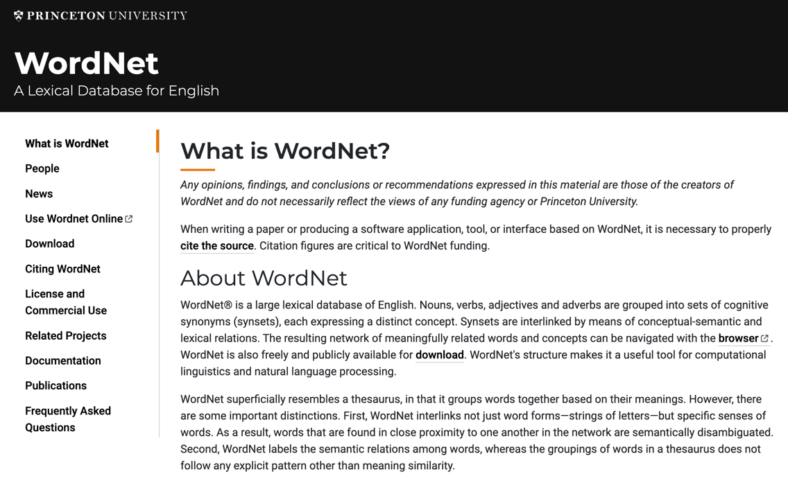

Advanced machine learning
NLP crash intro
Alex Avdiushenko
April 2, 2025
How to represent the meaning of a word?
It is a thesaurus developed since 2005
Problems with WordNet
- New meaning of words, impossible to keep up-do-data
- Subjective
- Manually curated
- Impossible to accurately compute word similarity

Distributional Hypothesis
A word’s meaning is given by the words that frequently appear close-by.
- “You shall know a word by the company it keeps” (J. R. Firth 1957)
- One of the most successful ideas of modern statistical NLP!
When a word $w$ appears in a text, its context is the set of words that appear nearby (within a fixed-size window). We use the many contexts of $w$ to build up a representation of $w$.
Example: Among all pets, **???** are the best at catching mice.
Word2Vec
Motivation
One-hot encoding representations:
- Do not reflect the semantic similarity of words
- Have too high dimensionality
One-hot simplified example:
- Gym $\to [0, 1, 0, 0, 0, 0]$
- Sofa $\to [0, 0, 1, 0, 0, 0]$
- Rest $\to [0, 0, 0, 1, 0, 0]$
Continuous Bag of Words (CBOW) and Skip-gram

CBOW Model
The probability of word \(w_t\) in a given context:
\[C_t = (w_{t-m}, \dots, w_{t-1}, w_{t+1}, \dots, w_{t+m})\] \[p(w_{t} = w|C_t) = \underset{w \in W}{\text{Softmax}} \left< u_w, v^{-t} \right>\]\(v^{-t} = \frac{1}{2m} \sum\limits_{w \in C_t} v_w\) — the average vector of words from the context \(C_t\)
\(v_w\) — vectors of predicting words,
\(u_w\) — vector of the predicted word, generally \(u_w \neq v_w\)
Criterion of maximum log-likelihood, \(U, V \in \mathbb{R}^{|W| \times d}\):
\(\sum\limits_{t=1}^n \log p(w_t|C_t) \to \max\limits_{U, V}\)
Skip-gram: How to Calculate Probabilities
\( p(w_o|w_c) = \frac{\exp[v(w_o)u^T(w_c)]}{\sum\limits_{w=1}^W \exp[v(w)u^T(w_c)]}\)
\(W\) — the set of all dictionary words
\(w_c\) — central word
\(w_o\) — context word
\(u(\cdot)\) and \(v(\cdot)\) — parameter vectors (embeddings), which are multiplied scalar-wise

What’s the problem with this approach?
In the denominator, of course, where all the words of the vocabulary are!
Mikolov proposed...
Hierarchical Softmax
We model the probability more efficiently by building a Huffman tree on the words, and then:
Here, \(v(n)\) is the trainable vector in the tree node, \(d_{nw_o} = 1\) if \(w_o\) is in the right subtree, \(d_{nw_o} = -1\) otherwise.
doc2vec
\[u^\prime (\text{doc}) = \sum\limits_{w \in \text{doc}} \omega_w \cdot u(w)\]As word weights \(\omega_w\), it makes sense to use TF-IDF (term frequency / inverse document frequency)
GloVe (Global Vectors for Word Representation)
Motivation: Unlike Word2Vec, which is a predictive model, GloVe is a count-based model that leverages global statistical information about word occurrences.
The model captures word relationships using the following formula:
\(X_{ij}\) — co-occurrence matrix where \(X_{ij}\) is the frequency of word \(j\) in the context of word \(i\)
\[ \log(X_{ij}) = w_i^T \tilde{w}_j + b_i + \tilde{b}_j \]This equation models the ratio of co-occurrence probabilities to capture semantic relationships between words.
Pennington, Socher, Manning "GloVe: Global Vectors for Word Representation", 2014
Large Language Model $\to$ ChatGPT
Datasets for pretraining stage

Pretraining base LLMs involves training on massive and diverse text datasets to capture a wide range of linguistic patterns, knowledge, and contextual understanding.
- Common Crawl: A vast dataset of web pages, capturing diverse topics and writing styles
- Wikipedia: A comprehensive and structured dataset of human knowledge across various domains
- BooksCorpus: A dataset of published books offering rich narrative structures and varied vocabulary
- OpenWebText: A curated dataset of high-quality web content similar to Reddit discussions
- ...
Perplexity in LLMs
In the context of language models, is defined as the exponential of the average log-likelihood per word in a given test set.
It can be interpreted as the weighted average number of choices a model has when predicting the next item in a sequence. A lower perplexity score indicates a better predictive model because it suggests the model has fewer choices, hence less uncertainty.
- Perplexity evaluates the model's uncertainty in predicting the next word
- High perplexity suggests the model is less certain and might be guessing among many options
Unexpected abilities begin to emerge

Summary
- Word Representation: Traditional methods like WordNet have limitations. Approaches like Word2Vec, CBOW, Skip-gram, and GloVe effectively capture semantic relationships.
- Language Models: Large language models (LLMs) like BERT and GPT are trained on diverse datasets. Perplexity is one of the key metrics for evaluating their predictive performance.
- Emergent Abilities: As LLMs scale, they exhibit unexpected capabilities, enhancing their utility in various NLP tasks.
What else can you explore?
- Stanford class cs224n: lecture09 pretraining